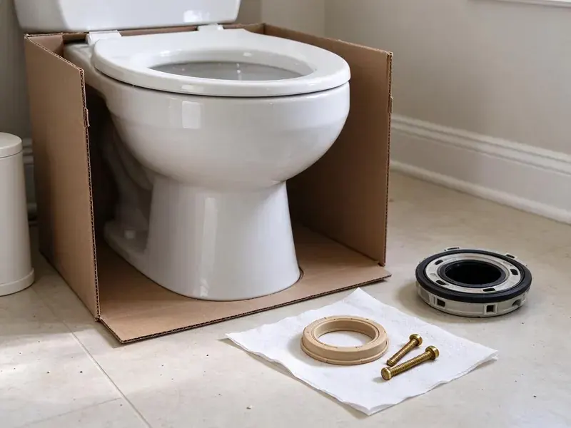

Sink Installation in Lakewood, OH
We check the cutout, the faucet holes and the drain height ahead of time on sinks in Lakewood, OH.
- Kitchen and Bath Sinks
- Old Sink Hauled Away
- Labor Guaranteed
- Undermount and Vessel Installs
Book a Sink Install in Lakewood, OH This Week
We replace tired stops while the cabinet is empty, if you want.
Your Local Sink Installer in Lakewood, OH
Our plumbers install sinks in Ohio homes built in every decade. A 1960s bath might have a galvanized wall stub and a steel drain arm, while a newer house has PVC and PEX, and the install plan changes with each. We bring adapters for both. Nothing gets forced to fit.
Work we handle every week:
- Reset trap arms for new bowl heights
- Mount faucets and pop-ups on the bench first
- Hang pedestal and wall-mount sinks on carriers or blocking

Additional Bathroom Plumbing Services in Lakewood, OH
From toilets to showers, our bathroom plumbing team in Lakewood, OH repairs, installs, and replaces every fixture with clean, code-compliant work.


Customers
Why Choose HRL Plumbing for Sink Installation in Lakewood, OH?
We stand behind the install in writing. Should a joint weep or a clip let go within the warranty, we fix it free. That is spelled out on the invoice.
- Correct Drain Height, The trap arm gets moved to match the new bowl so nothing slopes the wrong way.
- Foundation Integrity, A dry install protects the subfloor and the framing below the sink.
- Water Hardness, We pick sealants and fittings that hold up to mineral-heavy water in Lakewood.
Citywide Coverage
Suburbs are part of our regular route. Homes outside the city limits get the same install days and arrival windows as homes in town, and we do not add a mileage charge for the drive. Ask about your street.
Experienced Team
Clean work is part of the install. We cover counters and floors, cut silicone lines straight, wipe squeeze-out before it skins, and haul the old sink and its packaging away with us. You get your room back clean.
Safety-First Approach
Heavy sinks need proper support. A cast iron farmhouse bowl or a stone vessel can crack a cabinet or pull a bracket out of the wall if it is not supported, so we add blocking, rails or a carrier as the sink requires. We do not guess at load.
Trusted Certified Lakewood Plumbing Services Professionals
At HRL Plumbing, we take pride in licensed, certified plumbing services throughout Lakewood, OH. Credentials matter in this trade. Our plumbers hold recognized industry credentials, and they follow strict safety and quality rules on every repair, installation and maintenance call we run.
Call Us Now PHCC Plumbing Contractor Recognition
PHCC Plumbing Contractor Recognition Better Business Bureau (BBB) Accreditation
Better Business Bureau (BBB) Accreditation Angi Certified Pro
Angi Certified Pro ISO 9001 Quality Management Certification
ISO 9001 Quality Management CertificationSink Installation Work in Lakewood, OH
Pedestal Sink Installation in Lakewood, OH
Pedestal sinks hide almost nothing. Since the trap and stops are right behind the column, we center the drain and use chrome parts that look finished. The wall needs solid blocking. The basin hangs from it, not the pedestal.

Kitchen Sink Replacement in Lakewood
Pulling the old kitchen sink is half the job. Strainers are often fused on, the disposal has to come off, and the dishwasher hose needs a fresh high loop. Then the new bowl goes in. We reuse the disposal if it still runs well.
Undermount Bowl Setting on Stone in Lakewood
Stone shops cut the hole, but we set the bowl. Getting an undermount centered under a polished cutout so the reveal is even on all sides takes a helper, a few shims and patience before the clips get tightened. Uneven reveals look bad forever. We check it from both ends of the counter.
Commercial Restroom Sink Installation in Lakewood
Public restroom lavatories take a beating. We install wall-hung and countertop units on carriers, add sensor or metering faucets, and set thermostatic mixing valves where code requires tempered water at public hand sinks. We can fit tamper-proof parts. Spec sheets go to your general contractor.
Double Vanity Sink Installation in Lakewood
A second bowl means a second drain and two more supplies. We tie both drains into the wall with either two separate traps or a continuous waste to one trap, depending on the spacing, and add a new pair of stops for the second faucet. Vent sizing gets checked. Both bowls should drain without gurgling.
Vessel Sink Installation in Lakewood, OH
Vessel sinks sit on top of the counter. Since the rim sits higher, the faucet has to be taller or wall-mounted, and the drain must match whether the bowl has an overflow. Bowls without an overflow need an unslotted drain. Getting that wrong leaves water under the bowl.
Faucet and Drain Assembly for New Sinks in Lakewood, OH
Faucet and drain go on before the sink is set, when possible. Mounting the faucet and the pop-up on a sink that is still on sawhorses takes a fraction of the time and gets a tighter seal than working upside down inside the cabinet. That does not work on undermounts. Those get plumbed from below.

Sink Installation Cost Comparison in Lakewood, OH
Drop-in swaps cost the least. Undermounts cost more for clips and cure time, and vessels add a special drain and a taller faucet. Moving the drain adds the most. We price each piece on the quote.
Finding Sink Installation Near Me in Lakewood, OH
Install near me should include a firm date. You get a set day and a two-hour window, and we line up with your counter crew. Dispatch books the date by phone. The number is (740) 449-7505.
Local means we come back. Should anything loosen after install, the same crew is close and returns within a day or two. Callbacks get priority.
HRL Plumbing at a Glance
- Licensed and insured plumbers serving Lakewood, OH
- 24/7 emergency service with same-day scheduling
- Upfront, flat-rate pricing before work begins
- 4.9-star rated by 673+ Ohio customers
Lakewood Map
Lakewood Information
- Population
- 49,337
- Area codes
- 216/440/330
- Service area
- Lakewood and towns within a 40 mile drive
- Nearby
- Cleveland, Parma, Euclid, Elyria
Private wells serve many rural homes, and iron, sulfur and hardness are common issues that call for filtration or softening. A sink in Lakewood, OH holds up better when the joints are snug and the bowl is supported, so we set it without strain on the trap or the supply lines.
Talk to a Plumber
Reach out to HRL Plumbing for reliable plumbing work done by licensed pros in Lakewood, OH.
Our Specialized Plumbing Services in Lakewood, OH
At HRL Plumbing, you get every kind of plumbing service from one company across Lakewood, OH. We go from leak detection all the way to full system installations, for homes and commercial buildings, and we do it quickly at a fair price. Take a look at our core services below:


What Happens on Sink Install Day in Lakewood, OH
No surprises on install day. This is the plan.
Call for a Quote
Call (740) 449-7505 with the sink model or a link to it. We confirm what it needs.
Site Check
A plumber looks at the cutout and the plumbing under it before install day.
Install Day
We remove the old sink, set the new one and connect the drain and supplies.
Frequently Asked Questions About Sink Installation in Lakewood
Drop-in and pedestal sinks usually run $250 to $550 for labor. Undermounts and vessels run $350 to $800, and a second sink or drain move can hit $900 to $1,800. The fixture is not included.
Laminate pairs best with drop-in sinks. Stone and solid surface take undermounts since the edge polishes, while butcher block usually gets a drop-in or apron sink. Check with us before ordering.
Yes, that is routine work. After the fabricator polishes the cutout, we clip and seal the bowl and return after cure to plumb it. Faucet holes get drilled by the shop.
Hire a licensed plumber for anything past a straight swap. Plumbers can change drains, add stops and pull permits, and handymen are usually limited to like-for-like swaps. Ask for a license number.
Yes, and it is easiest at the same time. The flange goes in the new bowl, the dishwasher hose connects through the knockout, and we confirm power. Most homes use InSinkErator units.
Usually the drain is wrong. Bowls without overflows need an unslotted drain, and a small grid drain or poor venting slows them down. Swapping the drain often solves it.
Two layers of coverage. We cover our workmanship, and manufacturers cover fixture defects, sometimes for life. Register the faucet online.
All the major ones. Kohler, Elkay, Blanco and Kraus sinks are routine, with Moen, Delta or Pfister faucets. Lesser-known brands work as well.
Hear From Customers Who Hired Our Plumbing Experts

Rachel N.
Hard water was leaving white crust on every faucet and our dishwasher was struggling. The tech tested the water, recommended a softener sized for a family of five, and installed it with a bypass valve in one afternoon. The spots on our glasses are gone.
Water Softener · Parma, OH
James P.
Our restaurant had a slow leak at the hand sink that was rotting the cabinet base. HRL Plumbing came in at six in the morning before prep, replaced the trap and both supply lines, and was packed up before my first cook clocked in.
Commercial Plumbing · Cleveland, OHLisa C.
Water was pouring out from under the washing machine on a holiday weekend. HRL Plumbing talked me through closing the valves over the phone and had a plumber at the house within ninety minutes. It was a burst fill hose.
Emergency Plumbing · Parma, OH
Tyler J.
We bought a taller comfort height toilet for my dad, who just had knee surgery. The plumber pulled the old one, found the flange was cracked, and replaced it before setting the new bowl. Took about two hours.
Toilet Installation · Lakewood, OH
Jessica T.
We were adding a gas range in a kitchen remodel and needed a new line run from the meter. The plumber pulled the permit, ran the pipe through the crawl space, and had it inspected and approved within the week.
Gas Line Repair · Cuyahoga Falls, OHMonica A.
Our water bill nearly doubled in one month with no change in how we used water. The tech checked the meter, heard the leak under the hallway with his equipment, and opened a hole about a foot square. Fixed the same day.
Slab Leak Repair · Cuyahoga Falls, OH